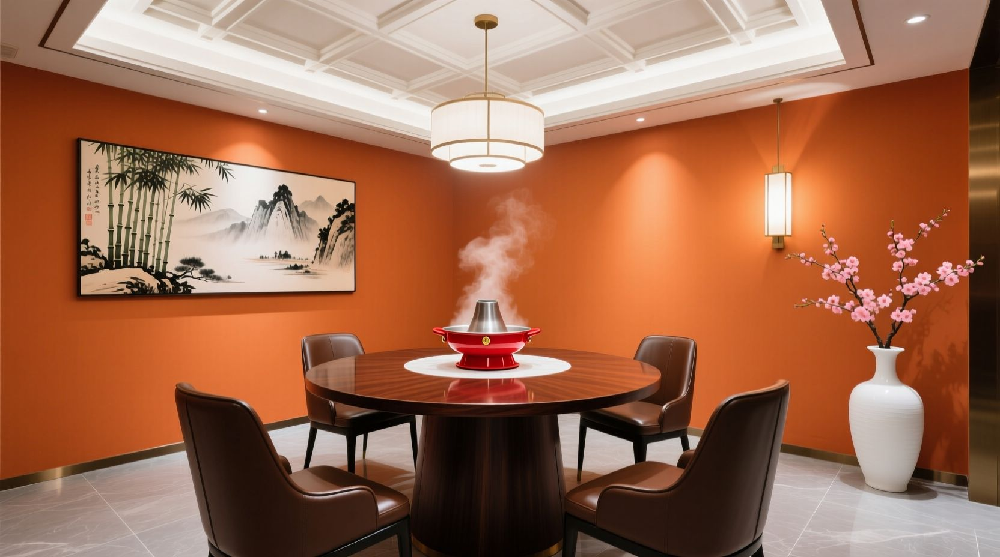

海底捞2026-2027年度经营与财务展望深度分析
本研究聚焦于海底捞公司2026-2027年度的经营发展、财务状况与分红前景，开展深度调研与预测分析。研究涵盖门店扩张策略、海外市场布局、供应链优化、财务表现及分红政策五大核心维度，基于最新年报数据与市场预测，提供前瞻性洞察。
门店扩张
全球网络扩展与新品牌孵化战略
海外市场
东南亚与全球扩张计划执行情况
供应链
智能化物流与自动化升级
门店扩张策略与增长模式转型
海底捞正在经历重大组织变革，从"单店驱动"的增长模式转向"总部平台驱动"的新模式。这一转变由创始人张勇于2026年1月重新担任CEO领导，而郭一鸣则专注于流程智能化与自动化领域。
核心发现：公司系统性评估"Pomegranate Plan"孵化机制下的项目，成熟的项目将由总部中台规模化推广，而非由创业团队独立管理。
作为新战略的一部分，公司已选定两个重点孵化项目："Dai Pai Dang Hotpot"和"Sushi"，预计将成为2027年重要的收入增长来源。2027年，海底捞计划加速旗舰品牌门店开业，利用新中台输出的不同模型，在高线城市优质购物中心及下沉市场同时发力。

新品牌孵化成果
- Dai Pai Dang Hotpot - 专注小火锅细分市场
- Sushi - 进军寿司品类拓展
- 预计2027年成为重要收入来源
交付业务与多品牌收入爆发式增长
2026年上半年，交付业务收入达到 20.5亿元 （同比增长121.2%），其占集团总收入比重翻倍至 9.2%。
其他餐厅品牌收入总计 12.7亿元 （同比增长113.1%），占比提升至 5.7%。 这些细分业务被识别为2026年下半年的主要增长引擎。
海外市场扩张与区域布局深化
海底捞的国际扩张战略以"体验优先"定位为核心，采用"核心+本地化"方法论。通过将其独特的服务模式与本地化产品相结合，在全球市场脱颖而出。该战略分析基于其2026年发展规划。
海底捞在国外应用了"30%标准化+70%本地化"的战略。例如，印尼分店推出了当地特色的沙巴酱调味品，体现了其灵活适应不同市场的运营能力。
2025年底全球门店网络
2026年第二季度扩张进展
关键洞察：截至2025年底，Super Hi运营126家海底捞餐厅，其中新加坡市场贡献1.6258亿元收入，占2024财年总收入的21%，是最大海外市场。
2025年上半年，海底捞在越南创造了 4360万美元 的收入，超过其全球总收入的10%，显示出东南亚市场的强劲增长潜力。
海外业务盈利能力提升
2026年上半年，海底捞海外业务（独立上市的Super Hi International）的餐厅级营业利润率增长至 10.7%， 显示出海外市场的盈利能力和运营效率持续改善。
供应链智能化升级与冷链物流建设
颐海国际成功利用海底捞这家中国最大的火锅连锁餐厅，增加其餐饮业务的收入和利润。颐海国际的专业知识支持国内供应链优化，提升了整体运营效率。
中国冷链物流市场规模预计将从2025年的 944.6亿美元 增长到2026年的 1044.3亿美元， 显示出冷链基础设施投资的强劲需求。
东南亚冷链市场增长
东南亚冷链物流市场在2026年达到 199.8亿美元， 预计将以 4.94% 的复合年增长率增长至2031年的244.3亿美元。
吉隆坡国际机场（KLIA）在2026年成为关键物流枢纽，支持区域冷链网络建设。
东南亚冷链投资趋势
在东南亚，冷链投资与不断增长的城市中产阶级、加工食品类别扩张密切相关，为海底捞等餐饮企业提供了完善的供应链基础设施支撑。
人工智能与机器人技术应用
2026年，人工智能、机器人技术和仓库自动化正在帮助组织构建更快、更智能的分销网络，解决供应链挑战。
海底捞的实际成就：从单店验证到多店复制。该公司正从在一家门店证明人形机器人价值，扩展到在多家门店部署规模化应用。
中国现在拥有150多人形机器人公司，预计到2026年，人形机器人的部署数量将超过 10万台， 日常供应链自动化的时程大幅缩短。
注意：人形机器人部署失败的试点项目可能造成50万至100万美元的损失（2026年行业数据），企业在推进自动化时需要谨慎评估风险与回报。
财务表现与盈利预测
2026年上半年，海底捞实现营业收入 223.37亿元 （同比增长7.9%），归属于股东的净利润为 17.64亿元 （同比增长0.5%）。
重要观察：出现"营收增长但利润增长缓慢"的模式，核心原因是毛利率压力，核心营业利润率从约11.63%下降至约11.25%，净利率从8.49%降至7.90%。
分析师预测，海底捞国际控股2026年收入将达到 463亿元， 相较前一年实现令人满意的3.2%增长。
收入增长
6.6%/年
分析师预测三年复合增长率
盈利增长
9%/年
分析师预测三年复合增长率
EBITDA利润率
47.2%
2029年预测水平
资本支出与现金流状况
评级机构预测，2025-2026年EBITDA利润率约为18%，EBITDAR利润率约为20%。预计资本支出为25亿元人民币，显示出公司在维持盈利能力的同时保持适度扩张节奏。
海底捞财务状况稳健，现金及现金等价物从2025年底的 39.5亿元 增加至2026年中旬的 49.4亿元。 2025年全年经营活动现金流为62.7亿元，相当于净利润的1.4倍。
股价表现与市场情绪
与百胜中国相比，海底捞国际控股表现出更强的股价韧性。百胜中国实现了-7%的回报，而海底捞国际控股股价下跌17%，显示投资者对其长期增长前景的信心相对稳定。
风险提示：2026年海底捞联合创始人突然出售约3.5亿美元股份导致股价暴跌，引发了市场对其长期增长前景的担忧。
分红政策与股东回报展望
2026年上半年，董事会宣布派发中期股息每股 0.377港元， 较去年同期增长11.5%。该股息将于2026年9月23日前支付。基于 earnings release 时11.41港元的股价，这暗示过去十二个月的股息收益率约为6.33%。
2025年股息详情
2026年股息预测
2026年股息预测：基于2025年每股0.76港元的股息，考虑到公司盈利增长预期，预计2026年全年股息将保持稳定或略有增长。
当前股价10.06港元（2026年9月11日），静态股息收益率约为7.55%。
分红政策与同业对比
与百胜中国相比，海底捞展现出更强的股东回报意愿。百胜中国控股的年股息为每股1.16美元，收益率为2.82%，派息率为40.83%。
海底捞国际控股的股息收益率为 7.74% （截至今日），显示出较高的股东回报水平。
核心优势：公司核心营业利润增长4%，并将上半年全部利润作为股息派发给股东，体现出管理层对股东利益的高度关注。
投资者预期与市场评价
对海底捞国际的共识评级为"买入"，基于27位分析师的见解。24位分析师建议买入股票，0位建议卖出，5位推荐持有，显示出市场对其增长前景的普遍乐观态度。
2026-2027年展望与结论
综合评估
2026年海底捞的前景比市场预期更加乐观。花旗分析师指出，这家中国火锅餐厅运营商的增长前景超出预期，显示出管理层在战略转型方面的执行力。
公司正在推进中台建设，并预计在2027年进入新的发展阶段，平衡门店改造与增量扩张，为可持续增长奠定基础。
核心增长动力
- 总部平台驱动新模式
- 新品牌孵化（Dai Pai Dang Hotpot & Sushi）
- 交付业务快速增长（+121.2%）
- 海外业务盈利能力提升（10.7%）
财务与股东回报
- 2026年收入预测463亿元
- 三年收入CAGR 6.6%
- 股息收益率7.74%
- "买入"评级（24/27分析师）
展望2027：公司预计2027年标志着同时进行门店改造和增量扩张的新阶段开始，新店开业速度将加快，为投资者带来持续的价值创造。
风险提示：空头投资者正在密切关注海底捞的长期增长前景，特别是在创始人股份减持事件后，投资者应保持审慎态度，密切关注公司执行新战略的效果。